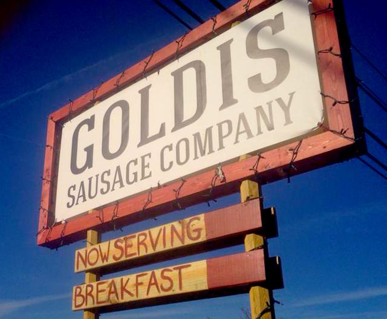

My Story
Ever since I was a young boy growing up in Southern Rhode Island, I always knew that I loved eating animals. After moving to Austin after high school, I soon discovered the glory of smoked meats at Kruez Market. This would equally raise my chlorestoral, body weight, and ambition.
After graduating from college, I decided to follow my passion for smoked meats by teaching myself how to grill and smoke meat. Eventually I started making sausages at my apartment, and realized just how delicious a hand-crafted sausage could be. That's when I decided to open up Goldis Sausage Company.
For two years I had a lot of fun making sausages flavors like Green Curry, Mac and Cheese Sausage, Apple Pie Sausage, Gumbo Sausage, and many more!
Eventually I came to the conclusion that working 70-100 hours per week every week on my sausage business would only get me so far, so I decided to shut down my business to pursue a new path.
My Future

Everyday I dedicate time to learning something new because slow and steady progress is, in my opinion, a certain prescription for success. My goal as a Junior Developer is to continually learn so that I will become a competent Senior Web Developer within the next couple of years.
Hobbies & Interests
- Kickboxing (for fitness)
- Oil Painting
- Occasional Cigars
- Making Fancy Sausages
- Learning History
- Brainstorming Business Ideas
- Going to Concerts!